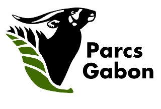

Le vert est la premiere couleure du drapeau de notre pays le Gabon. Drapeau constitué de trois bandes de couleures alignées horizontalement (Vert - Jaune - Bleu). Plus qu'une couleure, elle est un symbole. Symbole de sa forêt verdoyante qui recouvre près de 80% de l'ensemble du territoire. Une forêt qui constitue avec celle des pays voisin, le deuxième bassin forestier le plus important au monde derrière celui de l'Amazonie. Cette forêt regorge un écosysteme riche en faune et en flore de tout genre. Avec des plantes tel que l'incontournable Iboga (plante sacré) qui ne pousse que sur les terres du Gabon. Depuis 2002, des espaces de terre ont été mis sous protection avec la création de l'Agence Nationale des Parcs Nationaux (ANPN). c'est au total 13 Parcs nationaux reparties sur l'ensemble du territoire qui sont des espaces protegés dont un enregistré au patrimoine mondial de l'UNESCO, celui du parc de la Lopé. Nous vous proposons d'apprecier en image les merveilles que contiennent les forêts de notre beau pays le Gabon.
Nous vous présentons un rapace majestueux : 𝐥'𝐀𝐢𝐠𝐥𝐞 𝐏ê𝐜𝐡𝐞𝐮𝐫 𝐀𝐟𝐫𝐢𝐜𝐚𝐢𝐧, également connu sous le nom de 𝐏𝐲𝐠𝐚𝐫𝐠𝐮𝐞 𝐕𝐨𝐜𝐢𝐟è𝐫𝐞. Cet oiseau majestueux arbore une tête, un cou et une poitrine de couleur blanche, des couvertures alaires, un croupion noir et une queue blanche. Avec ses cris aigus, il est surnommé "𝐯𝐨𝐢𝐱 𝐝𝐞 𝐥'𝐀𝐟𝐫𝐢𝐪𝐮𝐞". Vivant près des lacs et fleuves, il chasse principalement des poissons, mais se nourrit aussi de rongeurs et d'oiseaux d'eau. 𝐀𝐯𝐞𝐳-𝐯𝐨𝐮𝐬 𝐝é𝐣à 𝐞𝐮 𝐥𝐚 𝐜𝐡𝐚𝐧𝐜𝐞 𝐝𝐞 𝐯𝐨𝐢𝐫 𝐮𝐧 𝐨𝐢𝐬𝐞𝐚𝐮 𝐚𝐮𝐬𝐬𝐢 𝐞𝐱𝐭𝐫𝐚𝐨𝐫𝐝𝐢𝐧𝐚𝐢𝐫𝐞 𝐞𝐧 𝐩𝐞𝐫𝐬𝐨𝐧𝐧𝐞 ? Un rapace fascinant que l'on a pu observé dans le parc national de Loango !
𝐂𝐨𝐧𝐧𝐚𝐢𝐬𝐬𝐞𝐳-𝐯𝐨𝐮𝐬 𝐥𝐞𝐬 𝐦𝐚𝐧𝐝𝐫𝐢𝐥𝐥𝐬 ? 𝐂𝐞𝐬 𝐩𝐫𝐢𝐦𝐚𝐭𝐞𝐬 𝐢𝐧𝐜𝐫𝐨𝐲𝐚𝐛𝐥𝐞𝐬 𝐬𝐨𝐧𝐭 à 𝐥𝐚 𝐟𝐨𝐢𝐬 𝐮𝐧𝐢𝐪𝐮𝐞𝐬 𝐞𝐭 𝐞𝐱𝐜𝐞𝐩𝐭𝐢𝐨𝐧𝐧𝐞𝐥𝐬 ! 𝐕𝐨𝐢𝐜𝐢 𝐪𝐮𝐞𝐥𝐪𝐮𝐞𝐬 𝐟𝐚𝐢𝐭𝐬 𝐢𝐧𝐭é𝐫𝐞𝐬𝐬𝐚𝐧𝐭𝐬 à 𝐥𝐞𝐮𝐫 𝐬𝐮𝐣𝐞𝐭 :
Apparence colorée : Les mandrills se distinguent par leur pelage brun-vert chiné, leur museau bleu, leur joue rose, leur barbe jaune vif et leur arrière-train bleu-rouge. Les mâles portent un renflement bleu électrique rainuré. Leur apparence est tout simplement spectaculaire !
Ils sont presque dans tout le Gabon.
Les parcs nationaux du gabon offrent une protection essentielle pour ces Primates, en accordant des zones préservées où ils peuvent vivre en relative sécurité.
𝐥𝐞 𝐦𝐚𝐣𝐞𝐬𝐭𝐮𝐞𝐮𝐱 𝐏𝐲𝐭𝐡𝐨𝐧 𝐝𝐞 𝐒𝐞𝐛𝐚𝐞! Ce serpent emblématique, avec une partie de son corps dressée. Impressionnant, il peut atteindre 2.5 à 6 mètres de long, et peser jusqu'à 60kg. Sa teinte brune, variant du noir au brun clair sur le dos, lui confère une élégance naturelle. Présent dans les parcs nationaux du Gabon, notamment dans le parc national de laLopé, le Python de Sebae préfère les plaines, les forêts, les marécages et les savanes. Chasseur nocturne redoutable, il capture ses proies en les enroulant dans ses puissantes spires. Malheureusement, cette espèce est menacée par la chasse excessive et la perte de son habitat naturel. Protégé et inscrit sur la liste des espèces partiellement protégées au Gabon, il est essentiel de préserver ces magnifiques serpents pour maintenir l'équilibre des écosystèmes et assurer leur survie pour les générations futures. 𝐌𝐚𝐢𝐬 𝐝'𝐚𝐩𝐫è𝐬 𝐯𝐨𝐮𝐬 𝐪𝐮𝐞 𝐟𝐨𝐧𝐭-𝐢𝐥𝐬 ?
L’unique, le perroquet gris du Gabon. La taille du perroquet Gris du Gabon varie de 35 à 42cm pour un poids moyen de 500g. Grand parleur, il est aussi très intelligent et curieux. Très sociable, il a besoin d’interaction au quotidien pour se sentir bien. Il apprend vite à répéter les sons qui l’entourent. Il est capable de les resituer dans le bon contexte, raison pour laquelle on parle d’intelligence et non de répétition pure.
Source :  //